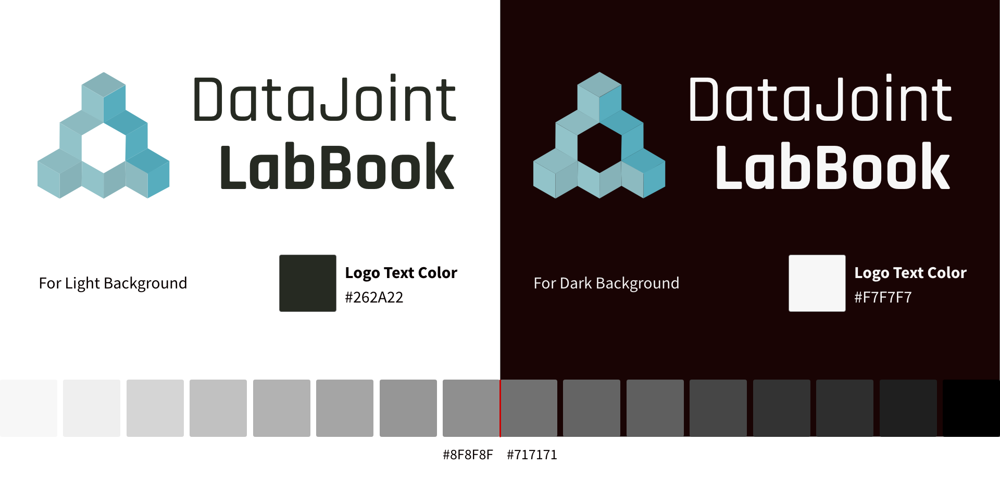

Style Guide¶
For those interested in contributing features with styling that is in alignment with the current LabBook look, this general style guide below may be used as a reference.


Logo¶
NOTE: For light colored background logo, make sure the place the logo on a background lighter than #8F8F8F. For a dark background logo, make sure to keep the background darker than #717171. When in doubt, check the contrast accessibility.
View PDF version for details.